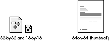

OpenDoc, Apple's compound-document architecture, offers a new experience to users.
This article gives developers a guided tour of OpenDoc's human interface and describes
its conceptual model. We provide the necessary background for helping you fit your
application into the OpenDoc world, and present some of the decisions you'll have to
make that represent a departure from today's applications.
OpenDoc provides a new user paradigm: the user focuses on creating a document or
performing a task, rather than on using a particular application. Understanding the
OpenDoc user experience is a prerequisite to developing OpenDoc part editors that are
consistent with and supportive of the OpenDoc design model. We've talked with
developers at OpenDoc training classes who had written code without realizing what
user features they had implemented; this article will provide a context for the
OpenDoc code you write. The article describes the OpenDoc user experience on the
Macintosh, but most of it also applies to Microsoft Windows and IBM OS/2.
Developer releases of OpenDoc are available through a number of different sources.
The documentation provided in these releases, which includes the OpenDoc
Programmer's Guide, OpenDoc Human Interface Guidelines, and the Drag and Drop
Human Interface Guidelines, can give you much more detail on what's covered here (we
concentrate on the basics, so a lot of exceptions aren't covered). Some of the technical
basics of OpenDoc are also covered in thedevelop articles "Building an OpenDoc Part
Handler" in Issue 19 and "Getting Started With OpenDoc Graphics" in Issue 21.
OpenDoc provides an object-oriented user model, where documents are objects that
contain other objects, and where each object may have distinct behaviors. However,
object isn't a term that typical users understand in a document context, so we use part
instead (for "part of the document"). Parts enable all kinds of content to be combined
into a single document. The user sees each part as a self-contained entity with its own
content, behavior, and set of properties. Each part contains one kind of data that's
intrinsic to it, and may contain other parts as well.
PARTS AND DOCUMENTS
Every document consists of one or more parts: a single part at its top level, called the
root part, and other parts that are embedded in the root part. Documents always reside
on the desktop or in a folder -- that is, they appear in the Finder. (Parts embedded
inside other parts aren't considered to be documents.) Users assemble a document by
embedding parts as needed, with drag and drop or with the Paste and Insert commands,
as we'll see later. Parts can be dragged between documents or onto the desktop (where
they become documents); documents can be dragged from the desktop into other
documents (where they become embedded parts).
The root part of a document determines the document's overall characteristics such as
its basic editing metaphor (for instance, text, drawing, or spreadsheet), the size of its
work area (its "page"), its printing options, and whether saving is manual or
automatic.
PART CONTENT: INTRINSIC AND EMBEDDED
Every part has some kind of intrinsic content, as defined by the part developer. This is
the content that's natural to the part, such as characters and paragraphs in a text part,
or lines, circles, rectangles, and so on in a graphics part. In addition to its intrinsic
content, a part may contain embedded parts that have their own intrinsic content, as
shown in Figure 1.
Figure 1. A text part with an embedded graphics part
There's no requirement that a part be able to contain embedded parts, although it's
usually desirable. Some parts have content models in which embedding doesn't make
sense -- for example, sound parts or parts that display information, such as clocks or
stock tickers. As a developer, you must decide whether it's desirable for parts you
create to allow other parts to be embedded. But, a key characteristic of OpenDoc is that
if a part can contain one kind of part, it can contain all kinds of parts. (Contrast this
with traditional documents, which can contain only certain standard data types, such as
text, PICT, and TIFF, in addition to their intrinsic content.) To a part, any parts
embedded within it are "black boxes" -- parts need know nothing about the internal
structure or semantics of embedded parts.
PART BEHAVIOR: EDITORS AND VIEWERS
There's little difference between the appearance of the OpenDoc window in Figure 1 and
that of a similar window in a page-layout application of today; manipulation of the
window contents, however, can be very different. When users interact with OpenDoc
parts, the resulting behavior is determined by part editors and part viewers.
A part editor is a full-featured OpenDoc software component that allows the creation,
editing, and viewing of parts of a particular kind, just as a conventional application
allows manipulation of documents now. Like applications, part editors are sold or
licensed and are legally protected from unauthorized copying and distribution. You
supply users with the part editor (which the user installs in the Editors folder in the
System Folder) and also a stationery pad (which the user will double-click or drag to
create an OpenDoc document or part).
A part viewer is a special, limited type of part editor that can display and print a
particular kind of part but can't be used to create or edit such a part. Often a part
viewer will just be a part editor with its editing and part-creation capabilities
removed. It's important that part viewers be widely available, to allow portability of
OpenDoc compound documents across machines and platforms. We encourage you to
create and freely distribute part viewers without restriction for all the kinds of parts
that you support. Wide availability of a particular part viewer encourages purchase
and use of its equivalent part editor, because users will know that other users will be
able to view parts created with that editor.
Note that it may be possible to view a part even when neither its editor nor its viewer
is present; translation may occur that substitutes a different, compatible editor. For
example, suppose a user creates a document with a text editor named SurfWriter and
sends it to someone who doesn't have the SurfWriter editor; the document is translated
to a similar format supported by a text editor that the receiving user does have.
Users don't work with icons for part editors and part viewers the way they work with
application icons today: editors and viewers aren't launched by double-clicking. So, as
a distinct break from application icons, the icons for editors and viewers have a unique
shape. This shape provides maximum customizable space for your identifying
elements, with no required badges or identifiers such as hands and pencils (see Figure
2).
Figure 2 . The default part editor and part viewer icons
As a step toward becoming fully OpenDoc compliant (that is, becoming part editors
themselves), some applications will be converted to container applications --
applications that allow parts to be embedded in their documents, much as some
documents today allow the embedding of QuickTime movies.
Many of today's applications have plug-in or extension APIs that may be used
to add functionality to the application. These will continue to be important to
extending the capabilities of part editors.
PROPERTIES OF PARTS
All parts have a basic set of properties; these include the part kind, the part category,
the view type (icon or frame, as we'll see in a moment), which editor to use, who last
modified the contents of the part, and when the part was last modified. You may decide
to support additional properties for parts that you develop -- for example, whether to
keep a paragraph of text with the next paragraph. Some part properties, such as the
view type, may be modified by users; other properties may be set only by developers
or by the system.
Part kind and part category. Two critical part properties that you need to assign
(in your part editor's 'nmap' resources) are part kind and part category.
The list of categories is maintained by CI Labs, a consortium that coordinates
cross-platform OpenDoc development; Styled Text and Video are two examples of part
categories. If SurfWriter is a MacWrite-like text editor, its part kind might be
SurfWriter Text and would be in the Styled Text category. The SurfWriter editor
would most likely allow translation from other part kinds in the same category.
View type. Your part editor needs to assign the default view type for its embedded
parts, which determines how each part is initially displayed: as an icon or in a frame.

Figure 3. Icons for OpenDoc parts
In the Finder, documents are displayed only as 32-by-32- or 16-by-16-pixel icons
in the initial OpenDoc release; eventually thumbnail icons and frames will also be
supported at the Finder level.
Internally, all parts have frames, even when they're displayed as
icons, but this implementation detail is hidden from the user and so is ignored
in this discussion; here we use frame to mean only the view that displays the
part's contents.
Users can change the view type with the Part Info command in the Edit menu (and
possibly with "accelerator" commands, such as View as Icon, that are provided by the
part editor). In Figure 1 above, frame view is desirable because it allows the user to
see the graphic laid out in the document and to edit it in place. An icon view might be
preferable for, say, a spreadsheet part that gives supporting data on a subject covered
broadly in the text. Any frame may be reduced to an icon at any time, or any icon
opened into a frame, without affecting the view type of any other part; however, the
containing part may reflow content when an embedded part's view type is changed.
Except that a part may be edited only when its content is viewed in a frame, icons and
frames are functionally equivalent. Operations such as drag and drop that may be
applied to one may be applied to the other. Whether viewed as icons or in frames,
embedded parts can be opened into separate windows if desired (although they're still
embedded parts and not documents).
Now that you know some of the basics about parts, let's look at what it's like to work
with them. We'll start with what the desktop might look like after the user opens the
document shown earlier in Figure 1 (see Figure 4). Document icons on the desktop
look the same as today, even though some of them, like the Text Document icon,
represent OpenDoc documents. From the user's point of view, there's no apparent
distinction between an OpenDoc document and a "regular" application document. The
menus are those of the text part editor (because the root part -- a text part -- is
active). The menu names are those you'd expect when editing text, except that the File
menu is named Document, and the Application menu icon (to the far right) is a
document icon rather than an application icon. Finally, notice the Stationery folder;
this contains the stationery pads that the user double-clicks or drags to create
documents or parts.
Figure 4. A Macintosh desktop in the world of OpenDoc
Now suppose the user wants to edit the content of this document's embedded graphics
part. The first step would be to select the content to be edited, just as in applications
today. To select the triangle, the user simply clicks it. As shown in Figure 5, a number
of things happen: The graphics part editor highlights the selected graphics object by
displaying handles. The graphics part becomes active (a border appears around its
frame, its menus replace those of the text editor, and its tool palette appears). The text
part is now inactive. Note that OpenDoc follows an "inside-out" model in determining
which part to activate: it activates the smallest part that contains the mouse location.
Figure 5. The same desktop after the user clicks the triangle
Just as the content of a part may be selected for editing, an embedded part (which is
content of its containing part) may itself be selected for certain operations. To select
an embedded part, the user drags across it or, if the part is active, clicks its border.
Figure 6 shows what happens when the user clicks the active frame border in Figure
5: The graphics part is selected and its border changes to show handles; the part that
contains it -- the text part -- becomes active again. The menus are replaced by the
text menus and the graphics palette goes away. (The same thing happens to the menus
and palette when the user selects text in the text part, or clicks there to get an
insertion point; in all cases, content that resides in the text part has been selected.)
Figure 6. Selected embedded part
In summary, parts viewed in frames can be active, inactive, or selected. This state is
indicated by the appearance (or absence) of a frame border. Parts viewed as icons can
be only inactive or selected.
In general, as soon as the user clicks inside a part's frame, that part becomes active.
The editor for the previously active part removes its menus, palettes, and other user
interface elements, and the new active part's editor displays its user interface
elements. The active part receives commands and keyboard events. Only one part at a
time may be active within a document because, as in today's documents, there can be
only one selection at a time.
RESIZING FRAMES
From a user's point of view, resizing a frame is similar to resizing an on-screen
object today. A difference in OpenDoc is that the same frame may show different
numbers of resize handles on its border when it's in different containers, because the
containing part's editor determines the appearance of a selected-frame border. Your
part editor may display more or fewer resize handles than other editors -- and
perhaps none, if your editor doesn't allow the frame's size to be changed.
Your part editor also controls how much space an embedded frame occupies. When a
user attempts to change the size of a frame embedded in your part, the embedded part
negotiates with your part about the new size. Your editor may grant the requested size,
reduce it, or refuse altogether, depending on its current contents and other part
preferences such as snap-to-grid. The containing part also determines whether to
adjust the layout of its own intrinsic content around the frame when a frame's size
changes.
Some containing parts may require that embedded frames be rectangular, in which
case their selection handles would resize only to rectangular areas. Others might allow
embedded frames to be nonrectangular; for example, a containing part could provide
selection handles that act independently, as shown in Figure 7.
Figure 7. Independent resize handles
When a user changes the size of your part's frame, you should not stretch or scale the
contents of the frame, but rather just change the viewing area. (Note how this differs
from the resizing of content, such as a selected graphics object, in which case scaling
may well occur.) Figure 8 shows a table part in its original state and after resizing to
a smaller size; the viewing area has become smaller, but the content hasn't been
scaled.
Figure 8. A table part before and after resizing
Although we recommend against scaling when a frame is resized, for some
parts scaling may make sense.
To see the entire table, the user can choose View in Window from the Edit menu. The
table part then opens into a separate window (called a part window) allowing all its
content to be seen, as shown in Figure 9. Although the part is viewed in a window, it's
not a document -- it's still an embedded part. Figures 8 and 9 show views of the same
content, and any changes made in one are reflected in the other views.
Figure 9. The table part opened into its own window
COPYING AND MOVING CONTENT
The user can copy and move any content with the Cut, Copy, Paste, and Paste As
commands as well as a variety of drag and drop operations. All these commands and
operations work with embedded parts as well as intrinsic content, and they work
between parts in the same document as well as between different documents. Also, with
drag and drop or the Insert command (in the Document menu), the source for a copy
operation can be an entire document.
The Paste As command presents a dialog that allows the user to specify the data format
to convert to when pasting. Holding down the Command key during drag and drop is the
equivalent of Paste As; at the end of the drop, the Paste As dialog is presented.
Copied or moved content is inserted at the insertion location or replaces the current
selection, with the exception that the Insert command inserts the contents of the
document after the current selection.
The part editor makes "embed vs. merge" decisions in certain circumstances -- that
is, whether to insert the copied or moved content as an embedded part or to merge it
with the destination part's intrinsic content. For example, a copied text part would be
merged into another text part but would be inserted as an embedded part in a graphics
part. Users will most often want the part editor to make these decisions, but they can
always override them with the Paste As command.
Links. The Paste As command, or its drag and drop equivalent, also allows links to be
created. Links are special cases of the copy operation: OpenDoc updates the copy when
the original content changes (the user specifies in what situations updating should
occur). Both intrinsic content and embedded parts can be linked, and links can exist
within a single part, between two parts in a single document, or between multiple
parts in different documents. The same content can be linked to multiple destinations,
but each link is technically one-way; every link has a single source and a single
destination. Typically, only edits to the source of the link are allowed. Some part
editors may allow edits to the destination (such as a font change); however, these edits
will not persist after the destination is updated from the source.
OpenDoc provides these basic menus when a document is opened: Apple, Document
(replacing the File menu), Edit, Help, and Application. The other menus vary
depending on which part is currently active. As we saw earlier, when a part is
activated, the associated part editor installs its menus and any tool palettes or
in-window controls. When a part (or the document window itself) is deactivated, the
menus and palettes associated with the active part's editor are removed.
Note that when content is dragged into a frame, the part editor shouldn't install its
menus unless the mouse button is released within the frame. For example, if the user
selects some text in a text part and drags it into a graphics part, the initial text menus
shouldn't be replaced until the user releases the mouse button within the graphics
part.
Figure 10 shows what the basic menus might look like when a part whose editor is
named SurfWriter is active. As you can see, the part editor has included its name in
some of the commands. In the sections that follow, we'll look further at some of the
commands in the Document and Edit menus.
Figure 10. The basic OpenDoc menus
DOCUMENT MENU COMMANDS
Most of the commands in the Document menu behave similarly to their File menu
counterparts. Generally these commands refer to an entire document (the exception,
Open Selection, is here because it's an open operation like Open Document). These
commands should be augmented only if absolutely necessary, and only by the root
part's editor.
Notice that the Quit command isn't included, nor should it be added; OpenDoc editors
are unloaded automatically when no longer needed. Also note that we're recommending
support for Save a Copy rather than Save As; Save a Copy keeps the current document
open and active, and the copy remains closed until the user opens it.
The Document menu includes these new commands: Open Selection, Open Document,
Insert, and Drafts.
EDIT MENU COMMANDS
The commands in the Edit menu are used to edit contents of the active part -- for
example, selected text or a selected embedded part -- or to modify properties of a
selected part. Because different part editors may require different editing commands,
the active part editor may add additional commands to this menu.
Undo and Redo work as usual except that they can be invoked successively -- that is,
if the user chooses Undo three times in a row, the last three "undoable" actions are
undone in order.
As described earlier, Cut, Copy, and Paste can be used to copy and move embedded parts
as well as intrinsic content. The Paste As command lets the user specify the data
format to convert to when pasting, and also includes an option for creating links.
The other commands of special interest in the Edit menu are Part Info, View in
Window, and Show Frame Outline:
OpenDoc revolutionizes the way developers deliver software, and does so without any
dramatic upheavals to the user. OpenDoc part editors and container applications can
coexist with applications and documents of today, providing OpenDoc's benefits without
disrupting how users work with current applications. Your OpenDoc parts should
behave much like current applications, so that users don't have to go through a
substantial learning process. Our user tests show that users think OpenDoc simply
fixes some "bugs" and lets them work the way they want. In other words, you and
OpenDoc will provide business as usual -- plus.
RELATED READING
DAVE CURBOW is the technical lead of the OpenDoc Human Interface team. Before
that he worked on AppleScript and developer tools such as ResEdit. In an earlier life he
was a software engineer on the Xerox Star and a now-forgotten mainframe operating
system. When he escapes from the office, Dave can often be found working with his
wife on their house or exploring cathedrals, castles, and other wonders in England
(including the Kew Bridge Steam Museum). It's well known that Dave can be bribed
with dark chocolate.
ELIZABETH DYKSTRA-ERICKSON is a recent addition to the OpenDoc Human
Interface team. She comes to Apple from research and product development in
collaborative technology and interactive multimedia at US WEST Technologies, Pacific
Bell, and the University of Amsterdam. In her copious free time, she teaches
human-computer interaction at the University of San Francisco, conspires to
resurrect her 1980's tech-punk band, and marvels with her husband at the havoc
potential of their two-year-old daughter.
Thanks to our technical reviewers Dave Bice, Tantek Çelik, Ray Chiang, and
Lori Kaplan, and to the OpenDoc Human Interface teams at Apple, Claris, IBM, and
WordPerfect, especially Sue Bartalo, Kristin Bauersfeld, Dick Berry, Alex Bigney,
Jennifer Chaffee, Pat Coleman, Dan Jordan, Jeff Kreeger, Per Nielsen, Kerry Ortega,
David Roberts, David C. Smith, Mark Stern, Mike Thompson, and Ron Zeno. Special
thanks to Dave Bice for providing source material for this article.